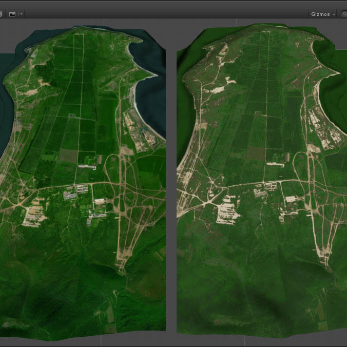
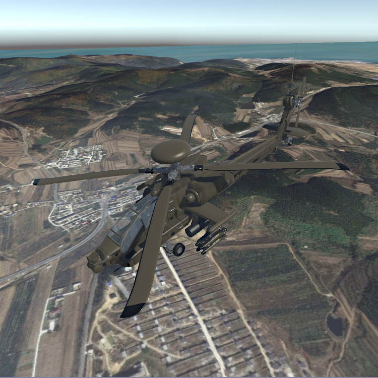

该示例有40多MB，打开过程请耐心等待。2015年末的一个项目，那时还刚接触Unity不久，需要对实际地形在三维引擎中进行还原，而且要求远近视角效果都不能太差。远看需要外观一致，近看需要有细节，做过的朋友懂的。打开示例后，按键盘上主键区的3键（不是小键盘的3），此时画面会变成左右两部分。WSAD用来在地形上移动。另外，12345键都可以按。

该示例有40多MB，打开过程请耐心等待。该项目旨在实现一个直升机飞行引擎，采用灵活的设计结构以实现模型外观易更换，参数可调节的功能，以便模拟各种不同型号的直升机。操作如下。F1：帮助，I：全过程自动飞行（内置数据），T：自动起飞，L：自动降落，K按住：自动平衡，X：从自动状态切回手动控制。操作是针对游戏手柄设计的，所以用键盘控制时比较灵敏，WSAD和方向键轻点即可，长按很容易翻车。失控时可以按住K，直到恢复平衡。按住右键移动鼠标控制摄像机视角。